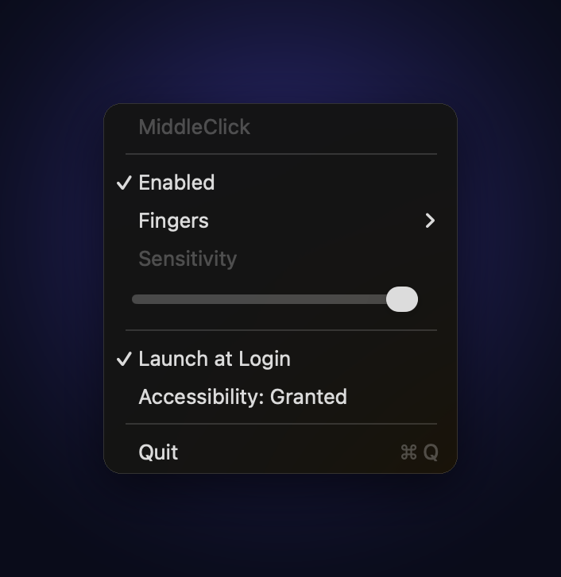

Real middle-click from a three-finger trackpad tap.

⬇︎ Download for macOS · .dmgMiddleClick isn't signed with an Apple Developer ID, so macOS blocks it the first time you open it. This is expected — do one of these once and it opens normally afterward.
MiddleClick, choose Open, then click
Open again in the dialog.MiddleClick being blocked, and click Open Anyway.
Confirm with Open Anyway (and Touch ID or your password if asked)./usr/bin/xattr -dr com.apple.quarantine /Applications/MiddleClick.app